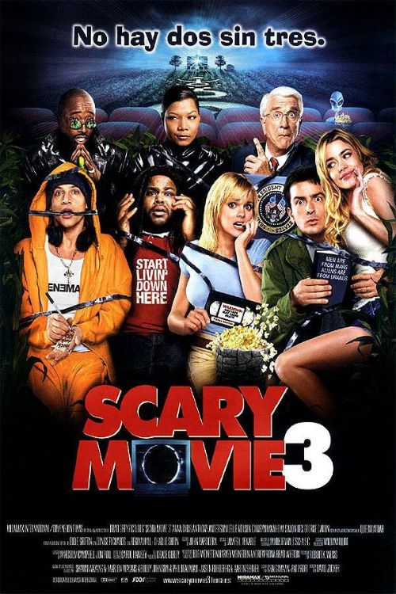

Scary movie 3

es una película estadounidense dirigida por David Zucker. Es la tercera parte de la saga cómica de Scary
Movie (Una película de miedo). Esta entrega tiene como protagonistas principales a los actores Anna Faris y
Simon Rex. Parodia películas como The Ring, Señales, The Matrix Reloaded, 8 Millas y Los otros.
Airplane!: cuando el presidente abre la puerta lanzando a Thabitha al pozo y dice la frase «Quiero
desearles buena suerte. Contamos con ustedes». Curiosamente fue Leslie Nielsen el que hizo ambas escenas.
Protagonistas Anna Faris
Regina Hall
Leslie Nielsen
Anthony Anderson
Simon Rex
George Carlin
Queen Latifah
Eddie Griffin
Denise Richards
Camryn Manheim
Charlie Sheen